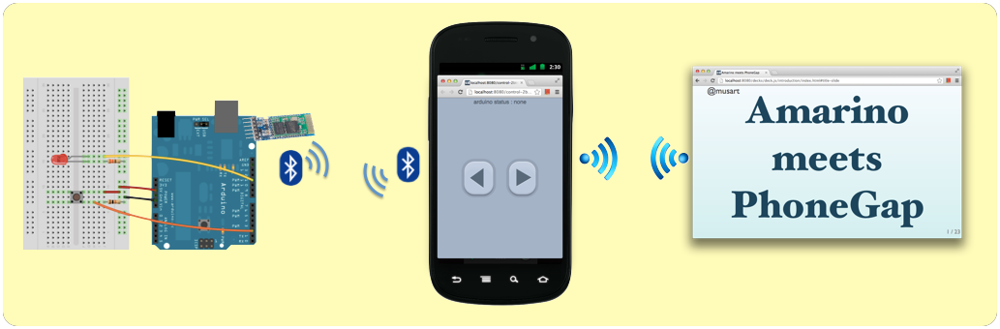
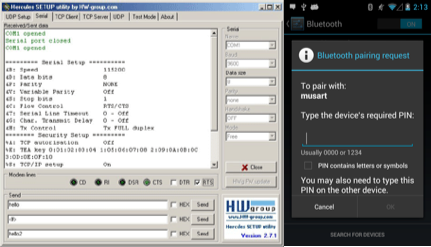

hardware and software

@musart
bluetooth library for controlling Arduino
HW : Arduino / Android Phone
SW : arduino codes / amarino library
Tools : sketch tools / eclispe
Android phone can control led and receive button press event via bluetooth
HTML5 Mobile Application framework
HW : Android Phone
SW : PhoneGap library
Web application can load on android phone as a mobile application.
Sensors can be controlled by Web Application as an native application.
It is easy to make mash up service from web application.
deck.js, Web presentation framework
controldeck.js written by node.js amd socket.io
button event > amarino > phonegap > web application > send controldeck.js > go to next slide.
led button > send web application > phonegap > amarino > led control

|
 |
use Arduino Sketch
Set your arduino and serial port
Arduino Uno & /dev/cu.usbmodemfa131
connect LED and button to arduino
implement source codes for controlling LED and button
github.com/musart/amarino-phonegap/blob/master/arduino/musart/musart.ino
create android project
get source codes
svn checkout http://amarino.googlecode.com/svn/trunk/ amarino-read-only
put service and receiver tags in your manifest file
add amarino library as a source code
use AndroidBluetoothLibrary.jar instead of AmarinoLibrary_v0.55.jar
copy ‘src’, ‘res’ and set manifest.xml
add phonegap library - cordova-2.2.0.jar
make activity to inherit DroidGap
call loadUrl() to load web application
put a web application into assets folder
set res folder and add attribute in manifest.xml
add phonegap javascript library - cordova-2.2.0.js
implement web application
var amarino = new amarinoPlugin({"connectionId":"00:12:03:10:22:91"}, onSuccess, onError);
amarino.buttonEvent(onCallback, onCallbackError);
function onCallback(data) {
var currentTimestamp = new Date().getTime();
if(data === "B:released") {
if( (currentTimestamp-amarino.timestamp) < 1000 ) {
alert("short press");
} else {
alert("long press");
}
}
amarino.timestamp = currentTimestamp;
}
amarino.controlLED();github.com/musart/amarino-phonegap/blob/master/server/public/control-2btn.html
amarinoPlugin.js
github.com/musart/amarino-phonegap/blob/master/server/public/amarinoPlugin.js
amarinoPlugin.java
Put intent for phonegap callback id due to amarino is designed by service-boradcast receiver. That means it is a asynchronous call.
amarino : www.amarino-toolkit.net/
phonegap : phonegap.com/
arduino :
schematics : breakoutjs.com/examples/schematics.pdf
decks.js : imakewebthings.com/deck.js/
controldeck.js : dfcb.github.com/controldeck.js/
github source code : github.com/musart/amarino-phonegap
@musart
/
#